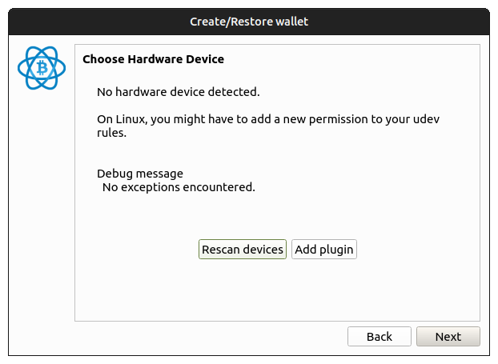

Plugin Development Guide
Everything you need to build, package, and distribute Electrum plugins.
Overview
Electrum plugins extend the wallet with new features without modifying core code. Plugins interact with Electrum through a hook system and can provide GUI elements for Qt, QML, and command-line interfaces.
Example plugin repositories for reference:
- LabelSync — multi-GUI plugin with Qt, QML, and CLI modules
- Revealer — Qt-only plugin with custom dialogs
- Nostr Wallet Connect — plugin using Nostr protocol integration
Plugin Hooks
Plugins interact with Electrum code through hooks. The @hook decorator on a plugin method registers it to be called when Electrum triggers that hook.
How hooks work
In your plugin class, decorate methods with @hook:
from electrum.plugin import BasePlugin, hook
class Plugin(BasePlugin):
@hook
def password_dialog(self, pw, grid, pos):
"""Called when the password dialog is displayed."""
# Add custom UI elements to the password dialog
...Electrum triggers hooks internally using run_hook():
# Inside Electrum core code
run_hook('password_dialog', pw, grid, pos)When a hook is triggered, all enabled plugins that have a matching decorated method will be called.
Available hooks
Below is a reference of commonly used hooks. The hook name must match the method name exactly.
| Hook | Description |
|---|---|
password_dialog | Customize the password input dialog |
load_wallet | Called when a wallet is loaded in the GUI |
close_wallet | Called when a wallet is being closed |
daemon_wallet_loaded | Called when the daemon loads a wallet |
init_menubar | Initialize the application menu bar |
init_qml | Initialize the QML application |
init_wallet_wizard | Add pages to the wallet creation wizard |
create_send_tab | Add elements to the send tab |
create_status_bar | Add elements to the status bar |
abort_send | Return True to abort sending a transaction |
make_unsigned_transaction | Modify an unsigned transaction before signing |
set_label | Called when a wallet label is set |
do_clear | Called when the send tab is cleared |
on_close_window | Called when a wallet window is closed |
wallet_info_buttons | Add buttons to the wallet information section |
qt_utxo_menu | Add items to the UTXO context menu |
receive_list_menu | Add items to the receive list context menu |
receive_menu | Add items to the receive context menu |
transaction_dialog_address_menu | Add items to the transaction dialog address menu |
create_contact_menu | Add items to the contact context menu |
export_history_to_file | Custom export of transaction history |
close_settings_dialog | Called when the settings dialog is closed |
show_xpub_button | Add buttons to the xpub display dialog |
init_keystore | Initialize a custom keystore (hardware wallets) |
Note: This list may be outdated. For a complete and up-to-date list of all available hooks, search the Electrum codebase for run_hook.
Directory Structure
A plugin is a directory containing the following files:
my_plugin/
├── manifest.json # Plugin metadata (required)
├── __init__.py # Commands and config declarations
├── qt.py # Qt GUI module (optional)
├── qml.py # QML GUI module (optional)
├── cmdline.py # Command-line module (optional)
├── my_plugin.py # Shared logic (optional)
├── icon.png # Plugin icon (optional)
└── MyPlugin.qml # QML UI file (optional)manifest.json— describes the plugin and is pre-loaded to display plugin information in the Electrum client__init__.py— registers commands and configuration variables- UI modules — contain a
Pluginclass inheriting fromBasePluginfor each supported interface (Qt, QML, CLI)
Example: Labels plugin structure
labels/
├── manifest.json
├── __init__.py # Plugin commands (push, pull)
├── labels.py # Core sync logic
├── qt.py # Qt GUI integration
├── qml.py # QML GUI integration
├── cmdline.py # CLI integration
├── Labels.qml # QML UI component
└── labelsync.png # Plugin iconmanifest.json
The manifest file is pre-loaded by Electrum to display plugin information before the plugin code itself is loaded. It must be valid JSON.
Example
{
"name": "my_plugin",
"fullname": "My Plugin",
"description": "A brief description of what the plugin does.",
"available_for": ["qt", "qml", "cmdline"],
"author": "Your Name",
"license": "MIT",
"icon": "my-icon.png",
"version": "0.0.1"
}Field reference
| Field | Type | Required | Description |
|---|---|---|---|
name | string | Yes | Internal identifier (must match the directory name) |
fullname | string | Yes | Display name shown to users |
description | string | Yes | Brief description of plugin functionality |
available_for | array | Yes | GUI types: "qt", "qml", "cmdline" |
author | string | No | Plugin author name |
license | string | No | Software license (e.g., MIT) |
icon | string | No | Icon filename (relative to plugin directory) |
version | string | No | Plugin version string |
requires | array | No | External dependencies: [["package", "url"], ...] |
registers_keystore | array | No | For hardware wallets: ["hardware", "id", "Display Name"] |
registers_wallet_type | array | No | For custom wallet types |
Hardware wallet manifest example
{
"name": "coldcard",
"fullname": "Coldcard Wallet",
"description": "Provides support for the Coldcard hardware wallet from Coinkite",
"requires": [["ckcc-protocol", "github.com/Coldcard/ckcc-protocol"]],
"registers_keystore": ["hardware", "coldcard", "Coldcard Wallet"],
"icon": "coldcard.png",
"available_for": ["qt", "cmdline"]
}Plugin Module
Each GUI module (e.g., qt.py) must define a Plugin class that inherits from BasePlugin. The class uses @hook decorators to register for events.
Minimal example
from electrum.plugin import BasePlugin, hook
class Plugin(BasePlugin):
@hook
def init_menubar(self):
"""Add a menu item when the menu bar is initialized."""
print("My plugin is loaded!")
def on_close(self):
"""Clean up when the plugin is disabled."""
print("My plugin is closing.")Full example with GUI elements
from electrum.plugin import BasePlugin, hook
from electrum.gui.qt.util import read_QIcon_from_bytes
from PyQt6.QtWidgets import QPushButton
class Plugin(BasePlugin):
@hook
def password_dialog(self, pw, grid, pos):
"""Add a virtual keyboard button to the password dialog."""
vkb_button = QPushButton('')
vkb_button.setIcon(
read_QIcon_from_bytes(self.read_file("keyboard-icon.svg"))
)
vkb_button.clicked.connect(
lambda: self.toggle_vkb(grid, pw)
)
grid.addWidget(vkb_button, pos, 2)
def toggle_vkb(self, grid, pw):
"""Toggle the virtual keyboard visibility."""
...Key BasePlugin methods
is_enabled()— check if the plugin is enabled and authorizedis_available()— override to add conditions for availabilitycan_user_disable()— return True (default) to allow the user to disable the pluginon_close()— override for custom cleanup when the plugin is disabledrequires_settings()— return True if the plugin has a settings UIsettings_widget(window)— return a widget for the plugin settings dialogread_file(filename)— read a file from the plugin directory (useful for icons and assets)get_storage(wallet)— get persistent dict storage associated with a walletthread_jobs()— return a list of ThreadJob objects for background tasks
Plugin Commands
Plugins can register custom commands that are accessible from the Electrum CLI and daemon RPC interface.
Use the @plugin_command decorator from electrum.commands:
from electrum.commands import plugin_command
@plugin_command('w', 'labels')
async def push(self, plugin=None, wallet=None):
"""Push labels to the remote server."""
return await plugin.push_thread(wallet)
@plugin_command('w', 'labels')
async def pull(self, plugin=None, wallet=None):
"""Pull labels from the remote server."""
return await plugin.pull_thread(wallet)The first argument to @plugin_command specifies the command category:
'w'— wallet command (requires a loaded wallet)'n'— network command (requires network access)'wp'— wallet command requiring password
The second argument is the plugin name (must match manifest.json name).
Creating .zip Files
External plugins are distributed as .zip files that users import via the Electrum GUI.
Use the make_plugin script included in the Electrum source:
./contrib/make_plugin /path/to/my_pluginThis produces a file named my_plugin-0.0.1.zip (using the version from manifest.json).
Users can then import the zip file in Electrum via Tools → Plugins → Add.
Hardware Wallet Plugins
Hardware wallet plugins differ from standard plugins in several ways:
- They are not displayed in the normal plugin list — they are enabled automatically by the wallet creation wizard
- They use
registers_keystoreinmanifest.jsonto register a hardware keystore type - They can be distributed as zip files with Python dependencies bundled
- Non-Python dependencies (like
hidapi) are typically bundled in Electrum binaries
Third-party hardware wallet plugins can be imported from the wallet wizard:

Keystore registration
// In manifest.json
"registers_keystore": ["hardware", "my_device", "My Device Name"]This tells Electrum to include your device in the hardware wallet selection during wallet creation.
Loading External Plugins
There are two ways to load external plugins:
1. Import from .zip file
Go to Tools → Plugins and click Add. Select a .zip file produced by the make_plugin script.
2. Symlink during development
When running Electrum from source, you can symlink your plugin directory into the plugins folder:
ln -s /path/to/my_plugin electrum/electrum/plugins/my_pluginElectrum will detect and load the plugin on next startup.